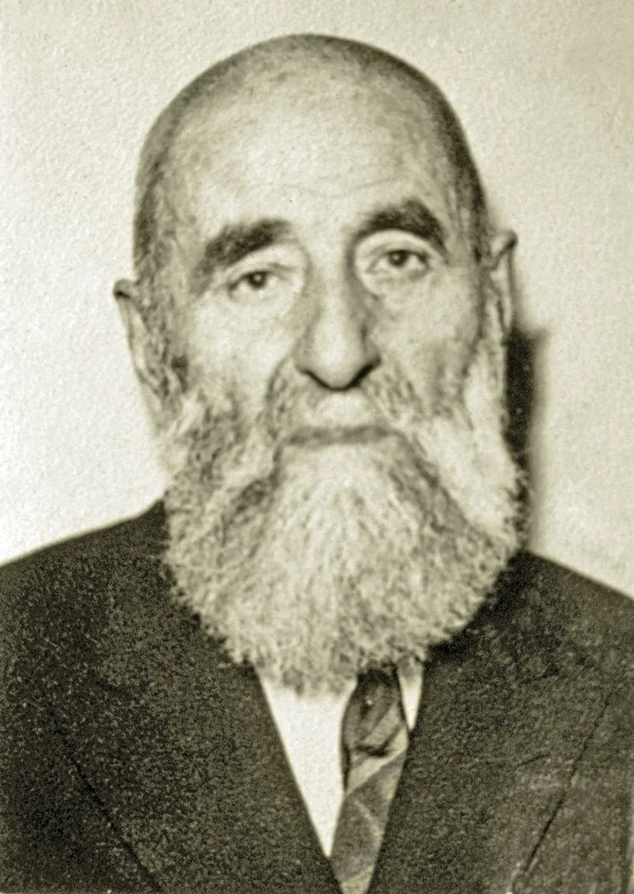

Ömer Nasûhi Bilmen’in hayatı ve eserleri

Kaynak: TDV İslâm Ansiklopedisi
1. Hayatı
Ocak/ Şubat 1883'te (hicrî Rebîülevvel 1300) Erzurum ili Salasar (şimdiki adıyla Ilıca/ Aziziye ilçesi Sarıyayla mahallesi) köyünde doğdu.1 Kendisinin, Şeyhülislamlığa sunduğu tercüme-i hâl varakasında babasının "…sülâle-i tâhireden olduğu beyne'l-ahâli malûmdur…" ifadesi mübarek Peygamber'in (s.a.v) pâk soyundan geldiğini yani seyyid olduğunu göstermektedir. 2Babası Ulemadan Hacı Ahmed Efendi olup Şeyh-Efendizâde diye tanınıyordu. Babasının 1895 senesinde ikinci haccını îfâsı sırasında Medine'de vefatı üzerine annesi Muhîbe Hanım ile yaşamaya başladı.3 Erzurum Ahmediyye Medresesinde, nakîbüleşraf kaymakamı olan amcası Abdürrezzak İlmî Efendi'den ve Erzurum müftüsü Narmanlı Hüseyin Efendi'den dersler okudu. Burada Arapça ve Farsçayı öğrendikten sonra Teftâzânî'nin Şerhu'l-Makâsıd'ı gibi eserleri mütalaa etmiştir.4 Hocalarının birbirilerine yakın vefatları sonrasında 1908 senesinde İstanbul'a ilmî hayatını devam ettirmek üzere seyahat etmiştir. Burada Fatih dersiamlarından Tokatlı Şâkir Efendinin derslerine bir yıl süreyle devam ederek 1909 yılında icâzet aldı. Ders Vekâleti tarafından açılan imtihanı kazandı ve dersiâmlık şehâdetnâmesi aldı. Bundan bir yıl sonra da 1913 yılında, Şer'î mahkemelere hâkim yetiştirmek üzere şeyhülislâmlığa bağlı olarak kurulan hukuk medresesi Medresetü'l-kudât'tan5 birincilikle mezun oldu.
2. Memuriyeti ve Müderrisliği
26 Eylül 1912'de Beyazıt Dersiamlığına, Temmuz 1913'te Fetvâhâne-i Âlî müsevvid mülâzımlığına ve 18 Mayıs 1916'da dört yüz kuruş maaşla Dâru'l-hilâfeti'l-aliyye Medresesi kısm-ı âlî fıkıh müderrisliğine tayin edildi.6 1922 yılında Meclis-i Tedkīkāt-ı Şer'iyye üyeliğine nakledildi ve aynı yıl bu dairenin kaldırılması üzerine dersiâmlığa devam etti.7 Bu süreçte ders vermeye devam eden hazret; Medresetü'l-vâizîn, Sahn Medresesi, Dâruşşafaka Lisesi, İstanbul İmam Hatip Lisesi ve İstanbul Yüksek İslam Enstitüsü'nde ve Dâruşşafaka Lisesi'nde yirmi yıla yakın bir süre siyer, ahlâk ve yurttaşlık dersleri okutmuştur. İstanbul İmam Hatip Okulu ve İstanbul Yüksek İslâm Enstitüsü'nde de usûl-i fıkıh ve kelam dersleri vermiştir.8
Talebeliği ve müderrisliği sırasında kaleme aldığı Osmanlıca ve Türkçe makaleleri; Beyânü'l-hak, Sebilü'r-reşâd, Hayr'ül-kelâm, Medrese İtikadları, İtisâm, Mahfil, İslâm-Türk Ansiklopedisi Muhitülmaarif Mecmuası, İslamın Nuru, İslam Yolu, İslam, Selamet, Hilâl ve İhlas dergilerinde neşredilmiştir.9
3. İstanbul Müftülüğü ve Diyanet İşleri Başkanlığı Yılları
14 Şubat 1926'da İstanbul Mütfülüğü müsevvidliği, 16 Haziran 1943'te de İstanbul mütfülüğü görevlerini yerine getirdi. İstanbul Müftülüğü görevine 16 Haziran 1943 tarihinde yapılan seçimle ve dersiâmlar ve imam-hatiplerin oyları ile başlamıştır.10 Muasır tartışmalarda fikrini beyan etmekten çekinmemiştir. Bu konularda bazı küçük risaleler kaleme almıştır.11 Gerek müftülüğü gerekse Diyanet İşleri Başkanlığı dönemi sıkıntılı ve zor dönemlerdir. Hazret birtakım mesnetsiz soruşturmalara maruz kalmıştır. Ayhan Işık hocanın şu satırlar dönemi aydınlatmak adına gayet yeterlidir;
"Ömer Nasûhi Bilmen'in İstanbul Müftülüğü ve Diyanet İşleri Reisliği dönemi dinî müesseseler açısından oldukça sıkıntılı dönemlerdir. Gerek Bilmen Hoca ile gerekse dinî müesseselerle ilgili sıkı bir takibat yapılmıştır. 1948 yılında İstanbul Cumhuriyet Savcılığı'ndan İl Emniyet Müdürlüğü aracılığı ile Müftülüğe gönderilen bir yazıda, içerisinde "Yiğit ancak Hz. Ali'dir. Kılıç da ancak Zülfikar adındaki kılıçtır." yazılı deve motifli resmin irticai bir nitelik taşıyıp taşımadığı sorulmaktadır. Bu durum insanların evlerine astıkları resimlerin dahî takibata uğradığını göstermesi açısından oldukça manidardır." Dönemin basınında da sık sık dinî müesseselerle ilgili yıpratıcı yazılar çıkmaktadır. Ömer Nasûhi Bilmen de kravat takmaması, başı açık oturmaması, rejime muhalif olması ve dinî telakkilere aşırı bağlılığı gibi sebeplerle sık sık şikayetlere maruz kalmıştır. Yapılan tahkikat neticesinde ihbar mevzularından hiç birisinin idarî ve adlî takibi gerektirecek mahiyette olmadığı, bunların tamamen gerçek dışı asılsız iddialar olduğu neticesine varılmıştır.12
Diyanet İşleri Başkanlığı görevinde daha bir yılını doldurmadan 6 Nisan 1961'de çeşitli sebeplerle emekliye ayrıldı. Ömrünün geri kalanını eser te'lîf ederek ve ilmî çalışmalarla geçirdi. Bütün dini ilimlerde kesb seviyesine ulaşan son alimlerden olan Ömer Nasuhi Bilmen hazretleri; fıkıh, kelâm, tefsir, hadis ve Farsça-Türkçe eselerin müellifliğini üstlenmiştir. Son yıllarında "Kur'ân-ı Kerîm'in Türkçe Meâl-i Âlîsi ve Tefsiri" isimli eserini te'lif ederek geçirmiştir. Kendisini ziyarete gelen bir talebesine "Şu tefsiri bitirip öyle öleyim, duam budur." Demiştir. Nitekim duası kabul olunan Ömer Nasuhi Bilmen hazretleri 80 yaşında yazmaya başladığı tefsirini 85 yaşında tamamlamış ve üç sene sonra 12 Ekim 1971 Salı sabahı Hakk'ın rahmetine kavuşmuştur. Cenaze namazı da Fatih Camii'nde kılınarak Edirnekapı Sakızağacı Mezarlığına defnedilmiştir.13
Vefatından sonra gazetelerde hakkında çeşitli yazılar yazılmış, bir ilim güneşinin battığı ve Büyük Âlim Ömer Nasuhi Bilmen vefat etti şeklinde manşetler atılmıştır. Bunlar arasından İstanbul müftülerinden Abdurrahman Şeref Güzelyazıcı'nın "Büyük Kaybımız" adlı yazısından bir alıntı yapmayı uygun gördük.
"Yüksek bir âlim, büyük bir fakih, kemâlli bir din adamını (Ömer Nasuhi Bilmen) Hazretlerini, 13 Ekim 1971 Çarşamba günü muhteşem bir îman cemâati eliyle gufrân topraklarına bıraktık. Bu ilmî grubun hazîn ve solgun izleri, irfan semamıza kıyâmet gecelerinden birini nakşetti." 14
Eserleri
- Hukuk-ı İslâmiyye ve Istılahat-ı Fıkhiyye Kamusu (8 cilt)
- Büyük İslam İlmihali
- Kur'an-ı Kerim'in Türkçe Meâl-i Âlisi ve Tefsiri (8 cilt)
- Büyük Tefsir Tarihi
- Kur'ân-ı Kerîm'den Dersler ve Öğütler
- Sûre-i Fethin Türkçe Tefsiri İ'tilâ-yı İslâm ile İstanbul Tarihçesi
- Hikmet Goncaları
- Muvazzah İlm-i Kelâm
- Mülehhas İlm-i Tevhid Akaid-i İslâmiye
- Yüksek İslâm Ahlâkı
- Sualli-Cevaplı Dini Bilgiler
Mezhepler arası karşılaştırmalı İslâm Hukuku kitabı olup Latin harfleriyle ve Türkçe yazılmış ilk ve en geniş eserdir. İlk olarak İstanbul Üniversitesi Hukuk Fakültesi tarafından basılan eserin (I-VI, İstanbul 1949–1952) daha sonra sekiz cilt halinde birçok baskısı yapılmıştır.15
Günlük hayatta ihtiyaç duyulan fıkhî bilgileri ihtiva eden eser akaid ile alakalı da bir kısım içerir. Eser şimdiye kadar milyonlarca kez basılmış ve halk tarafından büyük bir ikgiyl okunmuştur. Dilinin ağdası sebebiyle çeşitli sadeleştirme işlemleri de yapılmıştır. Ömer Nasuhi hazretlerinin, kendisinin ilmî ağırlığının yanında halk için ilmihal yazması da onun halkın ihtiyaçlarına önem veren bir şahsiyet olduğunu göstermektedir
Ömer Nasuhi hazretlerinin yazdığı son eserlerdendir. Üslûbunun sade olması hasebiyle halk tarafından ilgi ile okunmuştur.
İki kısımdan oluşan eserin birinci kısmı tefsir usulüne ikinci kısmı ise tefsir tarihine ayrılmıştır. Bu kısımda önce "mümtaz tabaka" diye adlandırdığı ashabı ele alan müellif, daha sonra, vefat tarihlerine göre on dört tabakaya ayırdığı müfessirler hakkında bilgi vermektedir. II. cildin sonunda 663 tefsir kitabıyla bunların müelliflerini ihtiva eden alfabetik bir liste vardır. Bunu kırk altı tefsire ait ek bir liste takip etmekte, daha sonra da Kur'ân-ı Kerîm'le ilgili çeşitli ilimlere dair 489 kitabı ve bunların müelliflerini kapsayan bir liste yer almaktadır.16
Hazretin vaazlar şeklinde hazırladığı eserde 30 adet ders vardır. Dersler konu ile alakalı ayet ve hadislerin açıklanması şeklinde hazırlanmıştır. Üslûbu halkın anlayabileceği ve umuma yönelik tarzdadır. Sadeleştirilerek günümüzde basılmaktadır.
Fetih Suresi tefsirini içermektedir ve İstanbul'un fethinin 500. Sene-i Devriyesi münasebetiyle kaleme alınmıştır. İslâm ve İstanbul tarihini içerir.
500 adet hadis-i şerifin Türkçeye tercüme ve izahını ihtiva etmektedir.
Yeni ilm-i kelâm devrinde yazılmış en önemli eserlerden birisidir. Liselerde okutulması adına yazılsa dâhi içinde kelâm bahisleri ve açıklamalırını ayrıca da felsefî akımların bazılarına tenkitleri içerir. Kendisi eserin mukaddimesinde şu sözlerle takdim etmiştir;
"Bu kitap, Müslümanların sahih inanclarını içerir. Genel olarak dinlere ve özellikle de mübarek İslam dininin yüce mahiyetine dair bir hayli önemli konuları ihtiva eder. İslam akideleri hususunda birçok incelemeyi barındıran, kelam meseleleriyle ilgisi bulunan birtakım felsefi nazariyeleri bünyesinde barındırır. Zamanımızda tartışma mevzuu olan tarihi ve toplumsal birtakım meseleler hakkında bir hayli malumat ve düşünceyi haiz bulunmaktadır. Bu kitap ümmetin fertlerinin maneviyatını yükseltmeye, hakikatleri araştırmaya çalışan genç fikirleri aydınlatmaya, insan toplumunun ruhi ihtiyaçlarını tatmin etmeye hizmet edecek yeni bir tarzda yazılmıştır. Bu hususlarda geçmişlerimizden ve çağdaşlarımızdan birçok şahsın ilmi eserlerinden istifade edilmiştir."17
Yüksek İslâm Enstitüsünde kelâm kitabı olarak okutulmak üzere kaleme alınmıştır.
Hazretin ahlâk bahisleri ile ilgili eseridir. Ömer Nasuhi hazretleri, "ahlâk" kavramını; nazarî, amelî, ferdî, içtimaî, ailevî yönleri ile detaylıca işlemiştir.
Diyanet İşleri Başkanlığı'nda personel sınavları için yazılmış soru cevaplı bir eserdir. Tefsir, hadis, kelâm, usûl-i fıkıh, vakıf, ferâiz ve siyer konularını ihtiva etmektedir.18
Kaynakça
- Ömer Nasuhi Bilmen, Büyük İslam İlmihali, Bilmen Yayınevi, İstanbul, 1986, s. 7. ↩
- Ömer Nasuhi Bilmen'in Şeyhülislamlığa sunduğu tercüme-i hâl varakası. ↩
- Ahmet Selim Bilmen, "Ömer Nasuhi Bilmen'in Hayatı", Hukuk-ı İslâmiyye ve Istılahat-ı Fıkhiyye Kamusu, c. 1, s. IX. ↩
- İsmail Kara, Türkiye'de İslamcılık Düşüncesi, c. 2, s. 457. ↩
- Medresetü'l-kudât: Osmanlı Devleti'nin son döneminde şer'î mahkemelere hâkim yetiştirmek üzere kurulan yüksek dereceli medrese. ↩
- Ömer Nasuhi Bilmen'in sicil dosyası, Diyanet İşleri Başkanlığı Arşivi. ↩
- Ahmet Selim Bilmen, a.g.e., s. X. ↩
- İsmail Kara, a.g.e., s. 458. ↩
- Ömer Nasuhi Bilmen'in makalelerinin tam listesi için bkz. İsmail Kara, a.g.e., s. 459-460. ↩
- Diyanet İşleri Başkanlığı Arşivi, Ömer Nasuhi Bilmen dosyası. ↩
- Bu risalelerden bazıları: "İslam'da Faiz", "Kadının Şahitliği", "İslam'da Boşanma". ↩
- Ayhan Işık, "Ömer Nasuhi Bilmen'in İstanbul Müftülüğü ve Diyanet İşleri Reisliği Dönemi", İslam Araştırmaları Dergisi, sayı: 15, s. 275-276. ↩
- Ahmet Selim Bilmen, a.g.e., s. XII. ↩
- Abdurrahman Şeref Güzelyazıcı, "Büyük Kaybımız", Sebilürreşad, c. 25, sayı: 602, s. 3. ↩
- İsmail Kara, a.g.e., s. 461. ↩
- Ömer Nasuhi Bilmen, Büyük Tefsir Tarihi, c. 2, s. 785-789. ↩
- Ömer Nasuhi Bilmen, Muvazzah İlm-i Kelâm, Mukaddime. ↩
- Ahmet Selim Bilmen, a.g.e., s. XIII. ↩